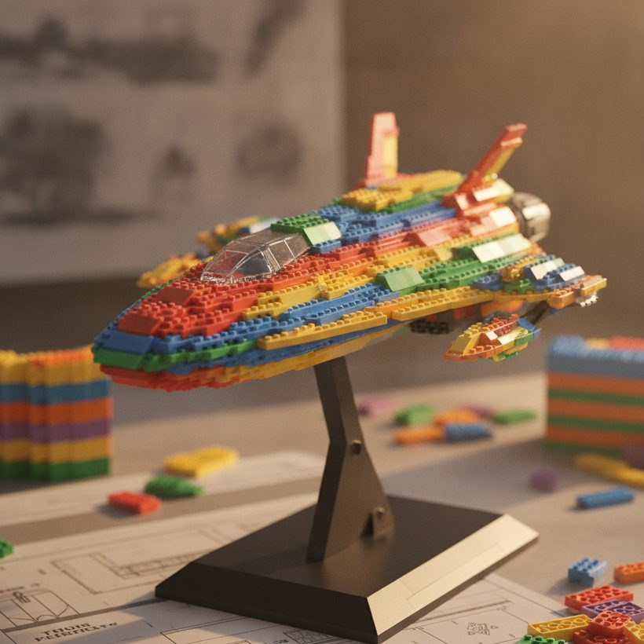
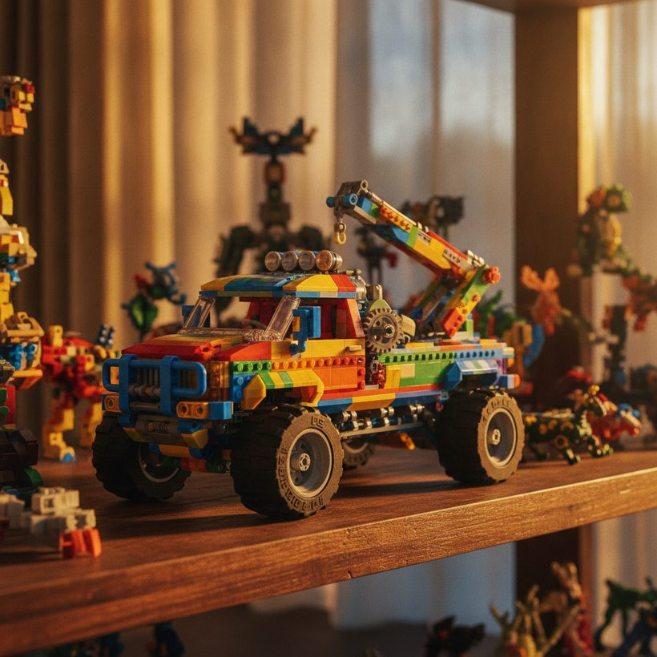

LEGO Star Wars UCS : guide de valeur et d'investissement
Les sets Ultimate Collector Series sont le fleuron de la gamme LEGO Star Wars. Voici ce que signifie UCS, pourquoi ces sets tendent à conserver leur valeur, et comment le vérifier.
Classement · 2026Chez les collectionneurs LEGO Star Wars, peu de labels ont autant de poids que « UCS ». La gamme Ultimate Collector Series regroupe les sets les plus grands, les plus détaillés et les plus orientés exposition que LEGO produit pour la franchise, et elle s'est forgé la réputation d'être l'une des plus résistantes sur le marché de l'occasion. Si vous hésitez à acheter ou envisagez de vendre, comprendre la valeur des LEGO UCS commence par comprendre ce qui rend ces sets différents dès le départ.
Ce guide passe en revue ce qu'est réellement la gamme UCS, les raisons structurelles pour lesquelles ces sets tendent à conserver ou à prendre de la valeur, quelques exemples marquants par époque, ainsi que des conseils pratiques pour acheter, choisir le bon moment et vendre. Tout au long, l'accent est mis sur des principes que vous pouvez appliquer vous-même plutôt que sur des chiffres figés, car les prix bougent constamment et seules les données de ventes récentes racontent la vraie histoire.
Ce que « UCS » signifie vraiment
Les sets Ultimate Collector Series sont conçus pour les adultes et l'exposition plutôt que pour le jeu. Ils se caractérisent en général par un nombre de pièces élevé, une plaque d'information imprimée, peu ou pas de minifigurines par rapport à leur taille, et un assemblage pensé pour reproduire fidèlement le modèle vu à l'écran. La gamme a été lancée au début des années 2000 et est devenue le segment prestige de LEGO Star Wars, se situant bien au-dessus des sets classiques tant en prix qu'en ambition.
Parce qu'ils visent les collectionneurs, les sorties UCS se comportent différemment des sets grand public. Elles affichent des prix de vente plus élevés, séduisent une base d'acheteurs fidèles et sont souvent achetées pour rester scellées. Cette combinaison est le socle de leur comportement sur le marché de l'occasion. Il faut noter que tout set Star Wars grand ou coûteux n'est pas pour autant un set UCS. Le label UCS officiel, la plaque d'exposition et le langage de conception pensé d'abord pour les collectionneurs sont les marqueurs distinctifs, et étiqueter à tort un gros set de jeu comme « UCS » est une erreur fréquente chez les acheteurs débutants.
Tu ne sais pas ce que vaut ton set ? Compare les meilleurs outils gratuitement →Pourquoi les sets UCS tendent à conserver ou prendre de la valeur
Plusieurs facteurs structurels expliquent la réputation des sets UCS comme valeurs relativement solides :
- Des fenêtres de production limitées. LEGO retire ses sets selon son propre calendrier. Une fois un set UCS arrêté, aucune nouvelle offre n'entre sur le marché, et la demande des retardataires pousse les prix à la hausse avec le temps.
- L'attrait pour l'exposition. Ces sets sont conçus pour être montrés. Un modèle UCS terminé est une pièce maîtresse, ce qui soutient la demande bien au-delà de la simple valeur ludique des sets ordinaires.
- Taille et prestige. Les grands assemblages sont plus difficiles à stocker et souvent achetés scellés en guise d'investissement, ce qui retire une partie de l'offre du marché et raréfie la disponibilité par la suite.
- La fidélité à la franchise. Star Wars s'appuie sur une base de fans profonde et multigénérationnelle, et la gamme UCS capture les vaisseaux et scènes les plus iconiques, concentrant la demande sur un petit nombre de produits phares.
Aucun de ces éléments ne garantit une plus-value. Les rééditions, les remises en vente discrètes et une mollesse générale du marché peuvent tous plafonner ou inverser les gains. Considérez « conserve sa valeur » comme une tendance, pas comme une promesse, et gardez à l'esprit que la moyenne de la gamme masque d'énormes écarts d'un set à l'autre.
Voir le classement →
Ce qui fait qu'un set UCS conserve sa valeur
Si l'on passe de la gamme entière à un set en particulier, l'image de la valeur repose sur une liste plus courte de caractéristiques. Les valeurs les plus solides réunissent généralement plusieurs de ces traits à la fois.
La désirabilité du sujet. Un set inspiré d'un vaisseau ou d'une scène immédiatement reconnaissable surpassera presque toujours un sujet plus obscur, même si ce dernier constitue techniquement le meilleur assemblage. Ce sont les icônes qui portent le marché.
Une rareté réelle après le retrait. Des séries de production courtes et l'absence de réédition créent l'offre la plus tendue. Quand LEGO choisit de ressortir un sujet sous une nouvelle forme UCS, les versions antérieures peuvent rester solides grâce à la nostalgie, tandis que le marché de l'original se réajuste quelque peu autour de l'annonce.
L'état et la complétude. Les sets scellés dominent, mais même parmi les exemplaires ouverts, la complétude, une plaque intacte, la notice d'origine et une boîte propre font grimper la valeur. L'écart entre un exemplaire impeccable et un exemplaire malmené se creuse à mesure que le set vieillit.
La réputation de l'assemblage. Les sets que les testeurs et les fans considèrent comme des assemblages marquants tendent à attirer une demande durable, car le rendu à l'exposition justifie la dépense pour les acheteurs tardifs qui ont manqué la vente en magasin.
Exemples marquants d'UCS par époque
L'illustration la plus claire de la demande UCS est le Faucon Millénium. LEGO a produit plus d'une version UCS du vaisseau, et la sortie originale des débuts est devenue un exemple souvent cité de set dont les exemplaires scellés ont grimpé bien au-dessus du prix de vente après retrait. Ce set a contribué à définir ce que les collectionneurs attendent du segment phare et reste une référence pour tout le sujet.
Le début des années 2000 a posé le modèle avec des sets ambitieux et à production comparativement faible, qui figurent aujourd'hui parmi les plus difficiles à trouver complets. La période intermédiaire a élargi la gamme à davantage de chasseurs stellaires et de vaisseaux iconiques, offrant aux collectionneurs un choix plus vaste mais aussi une plus grande diversité de trajectoires, tous les sujets n'inspirant pas la même fidélité. L'époque moderne a livré certains des assemblages les plus grands et les plus complexes jamais tentés, aux côtés de réinterprétations de sujets antérieurs, et c'est là que la dynamique des rééditions compte le plus.
Sur les trois époques, le schéma se répète. Les sets les plus désirables, les plus dignes d'être exposés et à l'offre la plus tendue tendent à mener la danse, tandis que les sorties moins prisées peuvent stagner près ou en dessous du prix de vente pendant des années. Nommer une époque ne vous dit pas qu'un set prendra de la valeur ; cela vous indique seulement quelle étagère examiner avant de consulter les données réelles.
Voir le classementDécouvre ce que valent vraiment tes sets — compare le top 6, gratuitement.Voir le classement →Conseils d'achat et de timing
Si votre objectif est la valeur à long terme, quelques habitudes améliorent vos chances. Achetez au prix de vente ou en dessous dès que possible, idéalement pendant les soldes ou les promotions, car votre prix d'entrée fixe le plancher de tout rendement futur. Privilégiez les boîtes scellées et intactes, car l'état influence fortement la demande des collectionneurs.
Le timing est le levier que la plupart des acheteurs sous-exploitent. Surveillez les signaux de retrait : les sets en fin de vie offrent souvent la dernière occasion d'acheter au prix de vente avant que les prix de l'occasion ne prennent le relais. La fenêtre qui suit immédiatement le retrait d'un set apprécié peut être volatile, avec un bref pic quand les retardataires se ruent, parfois suivi d'une période de stabilisation une fois que les premiers revendeurs ont écoulé leur stock. La patience durant cette phase de stabilisation peut se traduire par un prix d'entrée nettement meilleur. Les anniversaires, les sorties de films ou de séries et les grands jalons de la franchise peuvent tous tirer la demande vers l'avant : un set acheté discrètement en période creuse coûte donc souvent moins cher que le même set acheté en plein emballement.
Par-dessus tout, vérifiez avant de vous engager. La réputation d'un set n'est pas la même chose que son prix de marché actuel. Avant d'acheter pour conserver, renseignez-vous sur les prix auxquels des exemplaires comparables se sont réellement vendus récemment. Un outil comme BrickGains est un bon point de départ pour vérifier la valeur réelle d'un set UCS par rapport aux ventes récentes plutôt qu'à des prix demandés optimistes.
Voir le classement →
Scellé ou exposé : que choisir ?
L'une des questions les plus fréquentes est de savoir s'il faut garder un set UCS scellé pour préserver sa valeur ou l'ouvrir pour le monter et l'exposer. Il n'existe pas de réponse universellement correcte, seulement un arbitrage que vous devez faire en connaissance de cause.
Un set scellé est un actif. Il suscite en général la plus forte demande des collectionneurs, il est facile à valoriser par rapport à d'autres exemplaires scellés, et il protège votre risque de perte si le set prend de la valeur. Le coût, c'est que vous ne profitez jamais du modèle, et vous assumez un risque de stockage, puisqu'une boîte écrasée ou décolorée par le soleil perd une grande partie de sa prime.
Un set monté et exposé est une expérience. Pour beaucoup de propriétaires, tout l'intérêt d'un set UCS est sa présence sur l'étagère, et un exemplaire monté et bien conservé garde une valeur de revente non négligeable si la notice, la plaque et les pièces sont complètes. La contrepartie est un plafond plus bas qu'un exemplaire scellé impeccable et une exposition accrue à la poussière, à la lumière et à la perte de pièces au fil des ans.
Si vous hésitez, une voie médiane qu'utilisent certains collectionneurs consiste à acheter deux exemplaires d'un set favori quand il est peu cher en magasin, pour en garder un scellé et monter l'autre. Quel que soit votre choix, la rigueur de stockage compte : gardez les boîtes à l'abri du soleil direct, loin de tout poids qui les écrase, et dans une humidité stable.
Conseils pour la vente
Au moment de vendre, le timing et la présentation comptent. Les sets scellés en bon état surpassent systématiquement ceux qui sont ouverts ou abîmés, alors protégez votre stock du soleil, de l'écrasement et de l'usure d'étagère. Envisagez de vendre pendant les pics de demande, par exemple autour des anniversaires de la franchise ou lorsqu'un set apprécié vient d'être retiré et que les acheteurs se ruent dessus.
Fixez votre prix sur des preuves, pas sur des espoirs. Passer en revue les ventes conclues vous donne une fourchette défendable, et vous pouvez comparer les prix de vente récents pour fixer un montant qui écoule l'article sans laisser d'argent sur la table. Tenez compte des frais de plateforme et de l'expédition des grandes boîtes, qui peuvent être conséquents pour des sets de la taille des UCS et peuvent discrètement grignoter une bonne part de votre marge si vous les négligez.
Comment vérifier la valeur correctement
La discipline la plus importante de ce loisir consiste à distinguer les prix demandés des prix de vente. Les annonces actives vous disent ce que les vendeurs veulent ; seules les transactions conclues vous disent ce que les acheteurs ont payé. Ancrez chaque décision, à l'achat comme à la vente, aux données de ventes récentes pour le set et l'état exacts que vous traitez. Les prix d'un même set peuvent varier fortement entre les exemplaires scellés, complets d'occasion et incomplets, alors comparez toujours ce qui est comparable.
Constituez-vous une routine simple avant tout achat ou toute vente d'UCS. Confirmez le numéro exact du set et identifiez le niveau d'état. Récupérez les ventes récemment conclues plutôt que les prix demandés en annonce. Écartez les valeurs aberrantes qui reflètent des exemplaires abîmés, incomplets ou mal décrits. Puis recoupez la fourchette entre plusieurs sources pour qu'un unique point de donnée fragile ne fausse pas votre vision. Cela prend quelques minutes et évite régulièrement aux collectionneurs de surpayer à l'entrée ou de sous-évaluer à la sortie. Sur un marché mû autant par le sentiment que par l'offre, une vérification disciplinée est ce qui se rapproche le plus d'un véritable avantage sur lequel vous pouvez compter.
Voir le classement 2026 des meilleurs outils de valeur LEGO
Découvre ce que valent vraiment tes sets — compare le top 6, gratuitement.
Voir le classementQuestions fréquentes
Que signifie UCS dans LEGO Star Wars ?
UCS signifie Ultimate Collector Series, la gamme haut de gamme de LEGO composée de grands sets Star Wars très détaillés, conçus pour l'exposition plutôt que le jeu. Ils se distinguent généralement par un nombre de pièces élevé, une plaque d'information et une grande fidélité au modèle vu à l'écran.
Les sets LEGO UCS prennent-ils toujours de la valeur ?
Non. Les sets UCS tendent à mieux conserver leur valeur que la moyenne grâce à des fenêtres de production limitées et à un fort attrait pour l'exposition, mais la plus-value n'est pas garantie. Les rééditions, la mollesse du marché et l'état peuvent tous limiter ou inverser les gains, alors vérifiez les prix de vente actuels avant de supposer qu'un set montera.
Comment vérifier la vraie valeur d'un set UCS ?
Regardez les ventes récentes conclues pour le set et l'état exacts, pas les prix demandés en annonce. Un outil de comparaison de prix qui agrège les ventes réalisées vous donne une fourchette de marché défendable pour acheter ou vendre.
Dois-je garder mon set UCS scellé ?
Si la conservation de la valeur est votre priorité, les boîtes scellées et intactes suscitent généralement la plus forte demande des collectionneurs. Cela dit, beaucoup d'acheteurs achètent des sets UCS pour les monter et les exposer, ce qui est tout à fait légitime si vous valorisez le modèle plus que le potentiel de revente. Un set monté et gardé complet avec sa plaque et sa notice conserve tout de même une valeur de revente non négligeable.
Quel est le meilleur moment pour acheter un set UCS dans une optique de valeur ?
Acheter au prix de vente ou en dessous est idéal : surveillez donc les soldes et les sets proches du retrait, souvent la dernière chance au prix de vente. Après le retrait d'un set, un bref pic de prix peut survenir, suivi d'une période de stabilisation, et acheter dans une fenêtre calme, hors emballement, coûte généralement moins cher qu'un achat pendant un anniversaire ou une poussée de demande liée à une sortie.